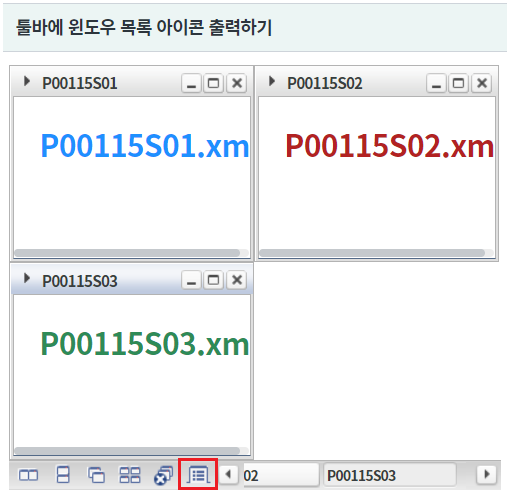
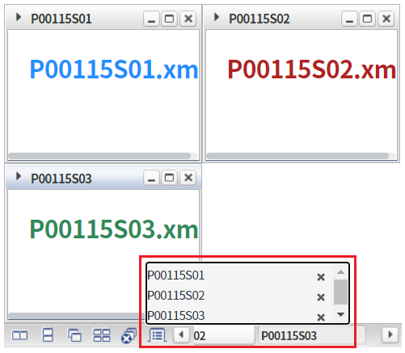
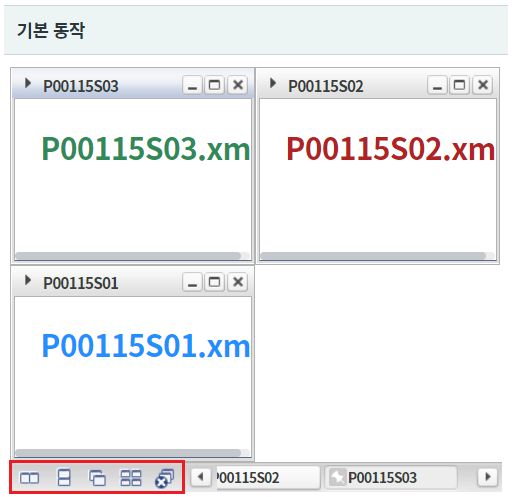
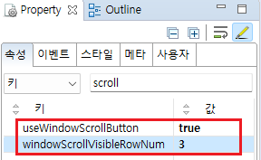
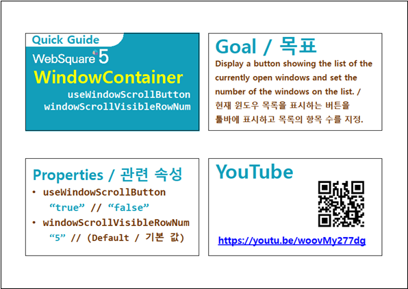

툴바 영역에 "윈도우 목록 보기" 아이콘을 출력하는 예제입니다. 아이콘을 클릭하면 윈도우 목록이 닫기 버튼과 함께 콤보 형태로 출력됩니다. WindowContainer의 속성 "useWindowScrollButton"을 설정하여 기능을 사용할 수 있습니다.
툴바에 윈도우 목록 아이콘 출력하기
기본 동작
[브라우저(Chrome) 실행 예시 - 윈도우 목록 아이콘]

윈도우 목록이 콤보 형태로 출력됩니다.
[브라우저(Chrome) 실행 예시 - 윈도우 목록 콤보]

"윈도우 목록" 아이콘이 출력되지 않은 것을 확인합니다.
[브라우저(Chrome) 실행 예시 - 툴바 영역]

윈도우를 생성(추가)하는 스크립트는 생략되었습니다.
WindowContainer의 속성을 정의합니다.
[필수] useWindowScrollButton="true" //현재 열려있는 윈도우 목록을 표시할 수 있는 버튼을 툴바에 추가.
[선택] windowScrollVisibleRowNum="3" //[default :"5"] 윈도우 목록 버튼을 툴바에 표시할 경우(useWindowScrollButton="true"), 목록에 표시할 항목 수를 설정.
그림 1.웹스퀘어5 SP5 스튜디오의 Property View(속성창) 예시

[소스 코드 예시]
<!-- windowContainer 의 소스 본문 예시 --> <w2:windowContainer useWindowScrollButton="true" windowScrollVisibleRowNum="3"> <!-- 중략 --> </w2:windowContainer>
useWindowScrollButton
windowScrollVisibleRowNum
[웹스퀘어5 SP5 개발 가이드] WindowContainer
링크 : https://docs1.inswave.com/sp5_user_guide/2059d4ce88b2fc16#cfaabdede9fd1587
[웹스퀘어5 SP5 개발 가이드] WindowContainer의 윈도우 목록 확인용 버튼 (useWindowScrollButton)
링크 : https://docs1.inswave.com/sp5_user_guide/2059d4ce88b2fc16#d6d4a45b44b4479e
WindowContainer의 윈도우 목록 확인용 버튼 (useWindowScrollButton)
링크 : https://youtu.be/woovMy277dg
